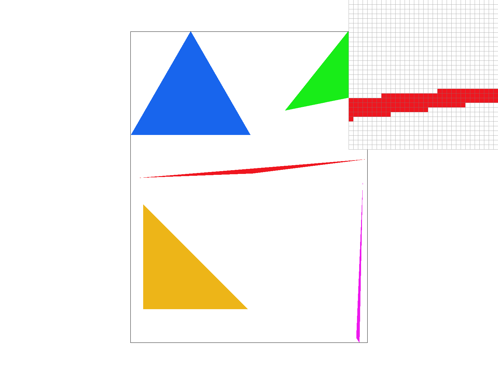
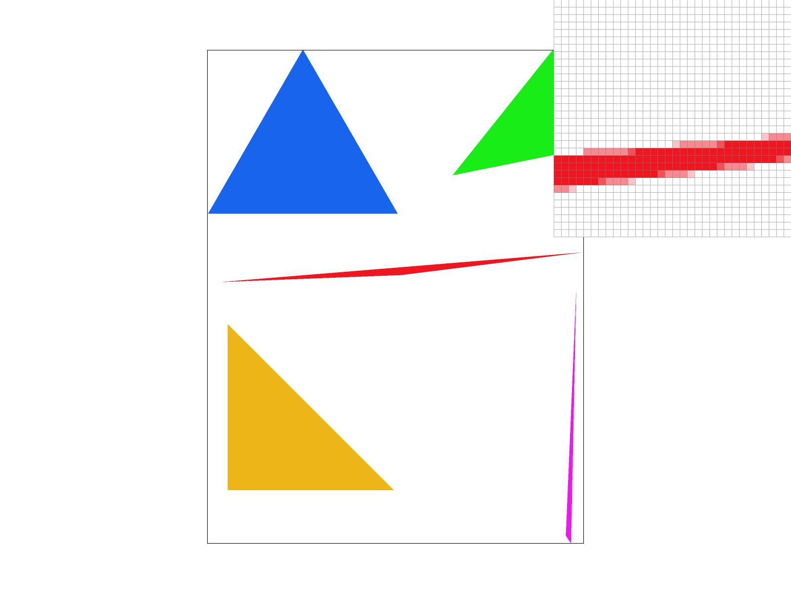
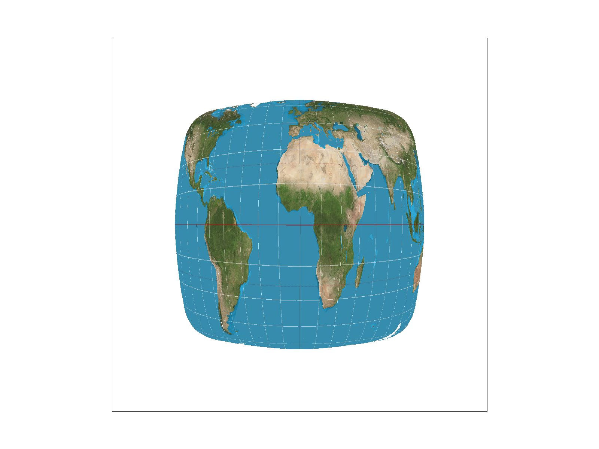
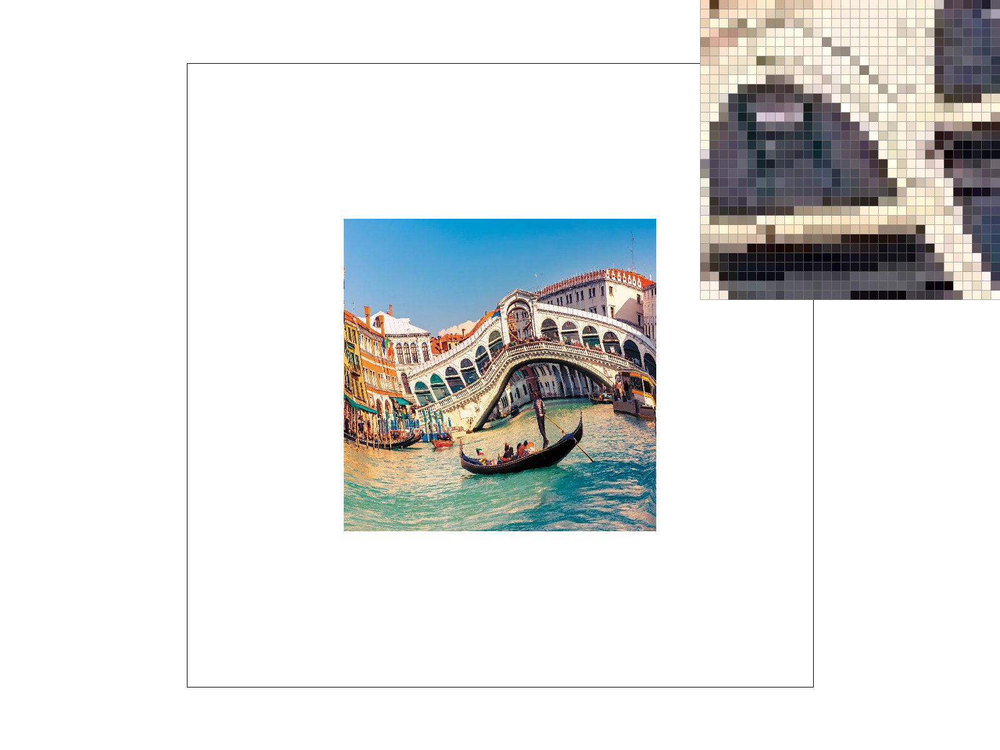
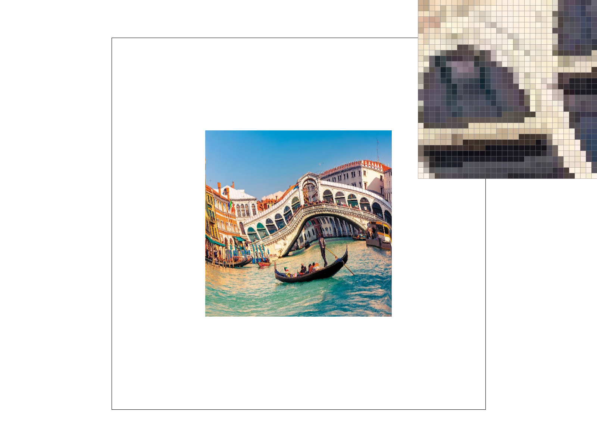

We rasterize the triangles by first setting up a bounding box for a given triangle. We determine the bounding box by finding the min and max of the given x-coordinates and the min and max of the given y-coordinates. Then, we iterated through each point within the bounding box we found. For each point within the bounding box, we determine if that point is within the triangle given by the three vertices. We determined this by creating a function is_point_in_triangle, where we determined if a point is on or inside the three edges created by the vertices of the triangles by using the three line tests discussed in Lecture 2. Mathematically speaking, we check if -(x-x0) * (y1-y0) + (y-y0) * (x1-x0) is greater than or equal to 0 for each vertex pair to see if a sample point (x,y) is in the triangle. Further, to ensure that the vertices are in counter-clockwise order, we created an orientation function that checks if the verticies are in counter-clockwise order (we did this by taking the cross-product of two consecutive edges like mentioned in Discussion 2 Q2.4 and checking if it's zero or negative—winding order is clockwise—or positive—winding order is counter-clockwise), and if not we swap the vertices so that the vertices are in counter-clockwise order.
This algorithim is no worse than one that checks each sample within the bounding box of the triangle because in our algorithim we calculate the bounding box of the triangle, which is defined in the HW1 spec as "the smallest rectangle that can be drawn whilst ensuring that the entire triangle is within it," and we checked each sample within the bounding box. We know we calculated the bounding box of the triangle because we calculated the min and max of the given x-coordinates and the min and max of the given y-coordinates so that we could create the smallest rectangle possible with these coordinates but still have the entire triangle within this rectangle, since no other coordinates in the triangle are going to be greater or less than the max and min respectively.
Here is a png screenshot of basic/test4.svg with the default viewing parameters and with the pixel inspector centered on the jaggies of the middle red triangle
The data structures we used for this task was mainly the sample_buffer array. Each element in the array represents a pixel or supersampled pixel. For example, if the supersample rate is 1 per pixel, then sample_buffer[0] represents one pixel, let's call this pixel x, and sample_buffer[1] represents the next pixel. However, if the supersample rate is 4 per pixel, then sample_buffer[0] represents a supersampled pixel of x and sample_buffer[1] represents the next supersampled pixel of x. The next two supersampled pixels of x are stored at sample_buffer[width * 2] and sample_buffer[width * 2 + 1]. In general, supersample pixels are stored at sample_buffer[y * width * sqrt(sample_rate) + x] where x and y are the coordinates of the supersampled pixel. We determine the coordinates of the supersampled pixel by multiplying the original pixel coordinates associated with a supersampled pixel by sqrt(sample_rate) and then adding offsets i and j to the x and y coordinates respectively. Mathematically speaking (x_new,y_new) = (x_original_pixel * sqrt(sample_rate) + i, y_original_pixel * sqrt(sample_rate) + j). Additionally, offsets (i,j) range from 0 to sqrt(sample_rate). To manage the buffer memory for the sample_buffer array, we always resize the array by the sample_rate specified. So, for example, if the sample_rate is 16 then sample_buffer will have a size of width * height * 16.
Our supersampling algorithim works like this: we go through the bounding box of the triangle like in Task 1, but we also go through each supersampled grid location. For example if the sample_rate is 4 per pixel, there are now 4x as many grid locations as when our supersample rate is 1 per pixel. To iterate through all these grid locations, for each pixel we iterate horizontally through sqrt(sample_rate) grid locations and vertially through sqrt(sample_rate) grid locations. So, in total we iterate through sample_rate number of grid locations per pixel (e.g. if our supersample rate is 16 per pixel then we iterate through 16 grid lcoations per pixel). To determine if a grid location is in the triangle, we want to get the midpoint of each grid location (similar to how we determined if a pixel was in a triangle), and pass in that midpoint to the is_point_in_triangle function that we programmed in Task 1. To determine this midpoint, we first determine the starting point of the grid location and then add 0.5/sqrt(sample_rate). If the grid location is in the triangle, we pass it into the fill_pixel function. We also changed fill_pixel so that it would fill in the location in sample_buffer determined by y * width * sqrt(sample_rate) + x, instead of y * width + x. We multiply y * width by sqrt(sample_rate) because the width of our bounding box has sqrt(sample_rate) times more values now. Then, in resolve_to_framebuffer we average out all the supersampled grid locations per pixel. How we do this is for each pixel we sum up all the color values at each supersampled grid location associated with the pixel and then divide that sum by our sample rate. Then we store this average color in the rgb_framebuffer_target array at the corresponding pixel index.
Supersampling is useful because it reduces aliasing like jaggies in pictures. It also allows for in general improved detail. Supersampling does all this because it collects higher resolution data (sampling more and more data at more and more grid locations) and then averages out these pixel colors to produce smoother and more accurate transitions between components in an image. Essentially, supersampling allows us to have a sampling frequency that is higher than the Nyquist frequency.
The modifications we made to the rasterization pipeline in addition to the ones I mentioned above include changing set_sample_rate so that the sample_buffer resizes to be of length width * height * this->sample_rate. We also changed set_framebuffer_target so that it always resizes again to be of length width * height * this->sample_rate. Additionally, we changed rasterize_point so that we filled all the supersamples corresponding to a point with the same color. Our rasterize_line function relies on rasterize_point so we didn't change any code in rasterize_line.
As mentioned above, we used supersampling to reduce aliasing in our triangles by collecting higher resolution data (since we are sampling more and more grid locations per pixel and at each of these finer grid locations we determine if it's inside the triangle or not, this allows for even finer details for our triangle), and then averaging out the colors we collected to produce smoother and more accurate transitions between triangles and other triangles (or triangles and the background). And hence, we reduced aliasing effects like jaggies.
Below are png screenshots of basic/test4.svg with the default viewing parameters and sample rates 1, 4, and 16
|

|

|
|
The results are observed because in the image with sample rate 1, no supersampling is happening, and we can visibly see the jaggies that form near the skinny triangle corner. In the image with sample rate 4, we can still see some jaggies but a lot of the jaggies have been smoothed out—there's not such a stark difference between the edge of the triangle and the white background anymore, instead, there's now a smoother color transition. This result happens because we are supersampling at a rate of 4, which means per pixel we have 4 times as many samples, and then when we average out these samples we get a more accurate representation of what color the pixel should be. Hence, we end up with a smoother triangle edge. In the image with sample rate 16, we can see that the transition between the white background and the triangle is even smoother and that there are even less jaggies. This result happens because we are now supersampling at a rate of 16, which means per pixel we have 16 times as many samples, so we are sampling even more data, and then we average out these samples and get an even more accurate representation of what color the pixel should be.
Below is the png of the our transformed cubeman.
What we were trying to do with cubeman is depict him waving. In order to do this, we had to ensure that his left arm was in a waving position. To ensure the left arm is in this waving position, we made sure that the rectangle connected to the shoulder of cubeman is left in a horizontal position and the leftmost arm rectangle has to be rotated 45 degrees from its horizontal position. Additionally, to make cubeman look like he's waving, we also need to translate the rectangle upward and a little rightward from it's original position. The reason why we need to translate it upward is because when the rectangle is rotated 45 degrees the rectangle rotates around its left end, so without translation, the rectangle is much lower than where we want it and cubeman does not look like he's waving. We also translated the rectangle slightly rightward from its original position so the rectangle is closer to the shoulder rectangle and the wave looks a little more realistic.
Barycentric coordinates in the context of triangles indicate the relative "distance" a point is from each vertex of the triangle, where the sum of the three coordinates is always 1. Each point can always be expressed in terms of alpha, beta, and gamma where (1, 0, 0) indicates the point is on vertex A, etc. We can use barycentric coordinates to interpolate values across a triangle. We can then use the barycentric coordinates to interpolate the color of a pixel in the triangle, given the colors of the 3 vertices.
For example, located below is an illustration of a triangle with colors interpolated using barycentric coordinates, generated using our own rasterizer with custom svg. The three coordinates have RGB colors (from 0 to 1) of (1, 0, 0), (0, 1, 0), and (0, 0, 1). The barycentric coordinates of the point in the middle are (0.33, 0.33, 0.33). We can then interpolate the color of this P by taking the weighted average of the colors of the three vertices, where the weights are the barycentric coordinates, resulting in a gray-ish color.
Here is a screenshot of test7.png:
One challenge we encountered when implementing this task is the white strip that occurred due to precision and rounding errors. We followed the suggestion on Ed and changed all of the float variables we added to double and that resolved the issue.
Pixel sampling is a sampling technique used to determine the color/brightness/texture/other properties of a pixel by selecting and analyzing specific points within an image or texture. We implemented pixel sampling to perform texture mapping by first using barycentric coordinates to determine which part of the texture we're sampling from at each sample point (x,y). We did this by using the alpha, beta, gamma values calculated from each sample point (x,y) to find the (u,v) values for each sample point. Mathematically speaking, (u,v) = alpha * (u0, v0) + beta * (u1, v1) + gamma * (u2, v2). Next, we passed in the calculated (u,v) texture space coordinates into sample_nearest and sample_bilinear. The texel returned from these functions are then passed through fill_pixel.
In sample_nearest, we get the nearest texel to (u,v) and returned that texel found. We find the nearest texel by rounding the (u * mipmap.width, v * mipmap.height) coordinates to the nearest integer and clamping the values to be between 0 and (mip.width - 1, mip.height - 1) for (u,v)respectively. We compute u * mipmap.width and v * mipmap.height so that we're accurately scaling to the desired image. We clamp the values so we don't go out of bounds in the texels array. In sample_bilinear, we first find the four nearest texels to (u,v). We determine these texels by calculating the ceil(u * mipmap.width) and the ceil(v * mipmap.height) which correspond to the closest texels to the right of (u,v) and the closest texels below (u,v). With these values we can then retrieve the four closest texels. Mathematically speaking we have two x values for these texels, ceil(u * mipmap.width) and ceil(u * mipmap.width) - 1 and two y values for these texels, ceil(v * mipmap.height) and ceil(v * mipmap.height) - 1. Combining these x and y values gives us the four closest texels. We additionally clamp these x and y values to again be between 0 and (mip.width - 1, mip.height - 1) respectively. After we get the four closest texel values, we find the fractional offsets s, t and use s and our four nearest texels to calculate intermediary texel Colors midUpperTexel and midLowerTexel by lerping the upper left and upper right texel found and lerping the lower left and lower right texel found respectively (as discussed in Lecture 5/6 on the bilinear filtering slides). We calculate offset s by computing u * mipmap.width - (ceil(u * mipmap.width) - 1) and we calculate offset t by computing ceil(v * mipmap.height) - v * mipmap.height. And then, as also discussed in Lecture 5/6 on the bilinear filtering slides, we calculate the final texel Color value by lerping the midUpperTexel and midLowerTexel Color values with t.
Below are png screenshots of texmap/test1.svg with nearest sampling at 1 sample per pixel, nearest sampling at 16 samples per pixel, bilinear sampling at 1 sample per pixel, and bilinear sampling at 16 samples per pixel.
|

|
|
|
|
|
In the bilinear sampling pictures, the texture is mapped much more smoother than in the nearest sampling pictures. As you can see prettly clearly in the lines going across the globe, the texture is smoothed out much more when bilinear sampling than when nearest sampling. Further in the countries themselves the texture is more smoothed out when bilinear sampling than when nearest sampling (the contrast in colors is much less stark). Additionally, the pictures that have 16 samples per pixel are also much smoother than the pictures with 1 sample per pixel. Though the contrast between the picture that has bilinear sampling at 1 sample per pixel and the picture that has biliner sampling at 16 samples per pixel is less stark than the contrast between the picture that has nearest sampling at 1 sample per pixel and the picture that has nearest sampling at 16 samples per pixel. The contrast between nearest and bilinear is also more stark when we are sampling at 1 sample per pixel as opposed to 16 samples per pixel.
There will be a large difference in the methods when there are many more screen space coordinates per texture space coordinate. There will also be a large difference if many screen space coordinates are right in between texture space coordinates (so it's hard to tell which texture space coordinates is the 'nearest'). There's a large difference here because nearest sampling will take the nearest texel coordinate but that might not accurately represent the texture at that specific screen space coordinate, but bilinear sampling will allows us to get a more accurate texture for a given screen space coordinate. In general, if a picture is quite magnified or the texture is realy small there will be a large difference between the two methods as we described above.
Level sampling is essentially an antialiasing technique that uses mipmaps, which are pre-computed lower-resolution versions of the texture image. The reason this works is because since pixel sampling in texture mapping is essentially a sampling problem, the way to anti-alias is to "blur out" the texture image such that the sampling frequency is higher than the Nyquist frequency. Since the mipmaps are already calculated in the starter code, for this task our main task was to implement the logic to select the right mipmap level to sample from and the logic to interpolate between the two mipmap levels (if in L_LINEAR mode). We calculated the derivatives using the approximation provided in the spec and used the formula from lecture slides to calculate the closest mipmap level (as float). Then we implemented the 3 modes to decide how to use this calculated mipmap level: L_NEAREST samples from the nearest integer mipmap level, L_LINEAR samples from the two closest mipmap levels (i.e. \( floor(D)\) and \( floor(D) + 1\) ), and L_ZERO always samples from \( D=0\) . To ensure no segfaults in case a level exceeds the maximum level (mipmap.size() - 1) we clamp the levels to be between 0 and mipmap.size() - 1.
For pixel sampling, P_NEAREST and P_LINEAR refer to how we treat the calculated pixel in texture space: P_NEAREST rounds it to the nearest-integer point, sampling only one pixel so is faster and uses less memory (less space allocated on stack) but leads to poorer antialiasing power; P_LINEAR samples from the four nearest-integer points around our uv point, so it is slower and uses more memory on the stack. However, since it linearly interpolates between the four points, it produces better antialiasing effects.
For level sampling, L_ZERO, L_NEAREST, and L_LINEAR refer to how we treat the calculated mipmap level. L_ZERO skips the mipmap level calculation altogether so has the highest efficiency, least memory usage (no additional stack memory needed for level calculation), but poorest antialiasing power. L_NEAREST rounds \( D\) to the nearest integer, therefore is slightly slower and uses slightly more memory on the stack than L_ZERO for running \( get_level()\) , but has better antialiasing power since it finds the appropriate mipmap level to use for each pixel. L_LINEAR is the slowest and uses the most memory consuming because it has to do the same calculation as L_NEAREST but needs to sample from two mipmap levels instead of one. However, it leads to the smoothest result (best antialiasing power).
Note: In this task we used ChatGPT to help refactor the code in sample() so that it looks cleaner. It is documented in the comments in code too. The exact code snippet it generated is:
auto sample_function = [&](float lvl) {
return (sp.psm == P_NEAREST) ? sample_nearest(sp.p_uv, lvl) : sample_bilinear(sp.p_uv, lvl);
};Below are png screenshots of texmap/test7.svg (the image we found) with L_ZERO and P_NEAREST, L_ZERO and P_LINEAR, L_NEAREST and P_NEAREST, as well as L_NEAREST and P_LINEAR.
|

|
|
|

|
|